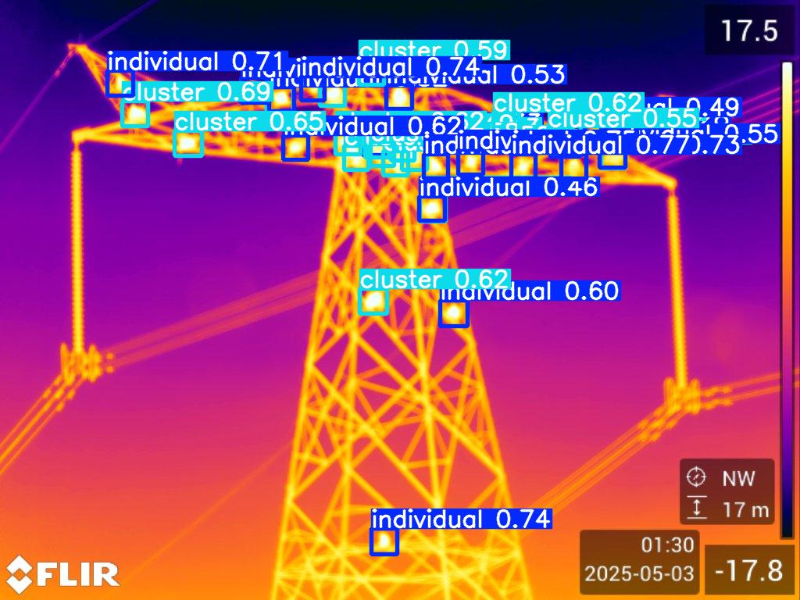

Evolution of behavioral courtship signals in Trinidadian guppiesOngoing
Recorded courtship displays of wild male guppies across rivers in Trinidad with varying predation levels. Using image detection and behavioral decomposition to analyze the postural dynamics of the sigmoid display and understand how courtship behavior has been shaped by ecological and evolutionary pressures.
Impact of ornamentation on courtship display in Trinidadian guppies – a novel approach using machine learning
BSc Thesis supervisor
Investigating whether asymmetrical ornamentation in wild male guppies correlates with lateralized courtship behaviour. Using a novel machine learning–based approach to quantify body posture and assess the relationship between ornamentation patterns and display orientation.
Mpala Baboon Research Project, Kenya
Effect of environmental conditions in the sleeping behaviour of Olive baboons (Papio anubis)2025
Studied huddling behavior in wild baboons using thermal imaging to investigate how environmental conditions influence sleep. Developed and implemented a detection model to estimate sleeping positions and analyzed their relationship with ambient factors.
– YoloV5 detection– Thermal imaging

Example output of the YOLO-based thermal detection model used to estimate baboon positions and huddling on the sleeping site.
University of Konstanz
First come, first served: exploring priority effect in algal communities2024
Experimental Ecology study using 320 algal communities to study priority effect. I automated sample collection and imaging with pipetting and microscope robots, programming them to optimize workflow. I also implemented machine learning techniques for cell counting and species identification, allowing a more precise and quantitative analysis of the large number of communities.
– Opentron pipetting robot
University of Oviedo
Ethology analysis of an invasive fish (Gambusia holbrooki) using self-made video analysis tools2021
Leadership and shoaling behavior in novel environments study using an invasive fish species (G. holbrooki).